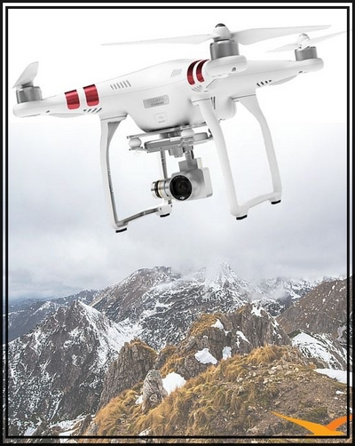

Le marché des drones est aujourd'hui, en pleine expansion. De nouveaux types d'utilisation voient le jour et le nombre de produits disponibles est exponentiel. Sur Drone Tech vous pouvez retrouver des mini-drones, des drones caméra, des drones de course ou encore des drones pro. L'ensemble de nos produits sont réalisés en France dans la région Langedoc-Roussillion, où nous allions savoir faire et qualité française. Nos drones sont accessible à tout âge, ils sont facilement malléable et la prise en main est très intuitive.
